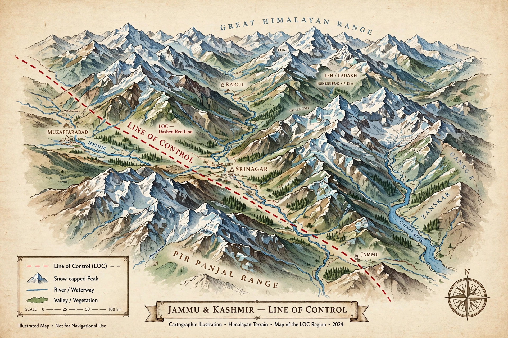

| Established | 1972 (Simla Agreement, from 1949 ceasefire line) |
|---|---|
| Length | c. 740 km |
| Between | Indian- and Pakistani-administered Kashmir |
The Line of Control (LoC) is a military control line between the Indian- and Pakistani-controlled parts of the former princely state of Jammu and Kashmir — a line which does not constitute a legally recognised international boundary, but serves as the de facto border.
The line originated as the 1949 ceasefire line after the Indo-Pakistani War of 1947–48, supervised by the United Nations. After the 1971 war it was renamed the Line of Control under the 1972 Simla Agreement, with minor alterations. The Siachen Glacier area beyond NJ9842 was left undefined, leading to conflict from 1984.
India constructed a fenced barrier along much of its side. The LoC has seen frequent artillery exchanges and skirmishes, notably during the 1999 Kargil War. Designated crossing points have at times allowed trade and bus services between Srinagar and Muzaffarabad.